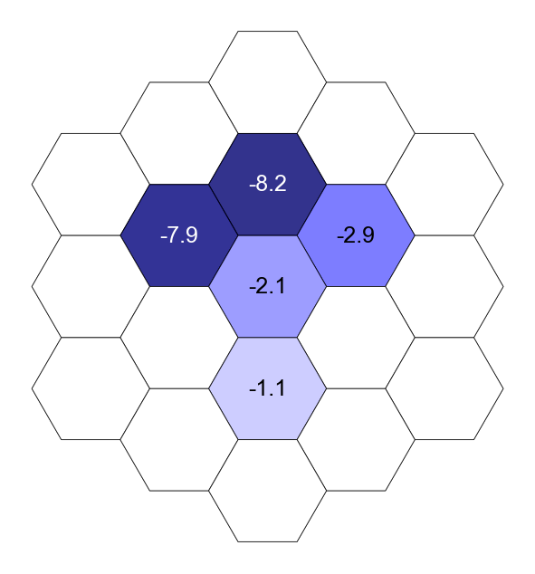
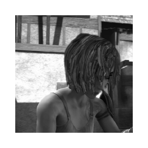
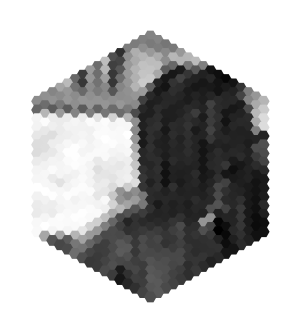
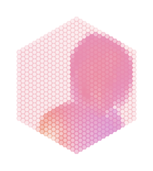

Figure 1¶
a¶
%load_ext autoreload
%autoreload 2
from flyvision import EnsembleView
ensemble = EnsembleView("flow/0000")
Loading ensemble: 0%| | 0/50 [00:00<?, ?it/s]
[2024-09-28 04:06:51] ensemble:138 Loaded 50 networks.
fig, ax, cbar, matrix = ensemble[0].connectivity_matrix()

e¶
fig = ensemble[0].receptive_field(source="Mi9", target="T4d", annotate=True,
annotate_coords=False, trained=False,
n_syn=True, cbar=False, fontsize=6, vmax=14,
figsize=[2, 2], title="", max_extent=2, edgewidth=0.2)

g¶
import matplotlib.pyplot as plt
from flyvision.datasets.sintel import MultiTaskSintel
from flyvision.plots.plots import hex_scatter, quick_hex_scatter
from flyvision.plots.plt_utils import rm_spines
dataset = MultiTaskSintel(dt=1/24)
sequence = dataset.cartesian_sequence(0, outwidth=436)
sintel movie
for frame in [0, 1, 18]:
fig, ax = plt.subplots(figsize=[1, 1])
ax.imshow(sequence[1, frame], cmap=plt.cm.binary_r)
rm_spines(ax)



dataset.augment=False
sequence = dataset[1]
fly eye rendering
for frame in [0, 1, -1]:
quick_hex_scatter(sequence["lum"][frame, 0], cbar=False)
rm_spines(ax)



activations
from flyvision.connectome import ConnectomeDir
from flyvision.plots import plt_utils
from flyvision.plots.network import WholeNetworkFigure
from flyvision.utils.color_utils import cell_type_colors
sequence = dataset[1]
ctome = ConnectomeDir()
nodes = ctome.nodes.to_df()
responses = ensemble[0].init_network().simulate(sequence["lum"][None], dt=1/50, as_layer_activity=True)
[2024-09-28 04:15:47] chkpt_utils:72 Recovered network state.
frame = -1
wnf = WholeNetworkFigure(ctome)
wnf.init_figure(
figsize=(5.250, 1.3125),
decoder_box=False,
cell_type_labels=False,
fontsize=5,
add_graph_kwargs={
"constant_edge_width": 0.2,
"edge_width": 0.15, # this scales edges relative to each other
"constant_edge_color": "k",
"edge_alpha": 0.1,
"nx_kwargs": {"min_source_margin": 0,
"min_target_margin": 5,
"selfloop_x0": 0,
"selfloop_y0": 0,
"selfloop_h_shift": 0.025,
"selfloop_v_shift": 0.1275},
},
network_layout_axes_kwargs={
"types_per_column": 4,
"region_spacing": 1.25,
"wspace": 0.0,
},
)
for i, cell_type in enumerate(wnf.layout.keys()):
ax = wnf.axes[i]
u = nodes[nodes.type == cell_type].u.values
v = nodes[nodes.type == cell_type].v.values
hex_scatter(
u,
v,
responses[cell_type][0, frame],
fig=wnf.fig,
ax=ax,
label=f"{cell_type}",
label_color=cell_type_colors[cell_type],
cmap=plt.cm.binary_r,
cbar=False,
fontsize=5,
fill=True,
labelxy="auto"
)
(xmin, ymin, xmax, ymax) = ax.dataLim.extents
ax.set_xlim(plt_utils.get_lims((xmin, xmax), 0.01))
ax.set_ylim(plt_utils.get_lims((ymin, ymax), 0.02))

optic flow
from flyvision.plots.plots import quick_hex_flow
sequence = dataset[1]
for frame in [0, 1, -1]:
quick_hex_flow(
sequence["flow"][frame],
cwheel=False,
cwheelradius=0.2,
cwheelpos="southeast",
cwheellabelpad=-3,
)
